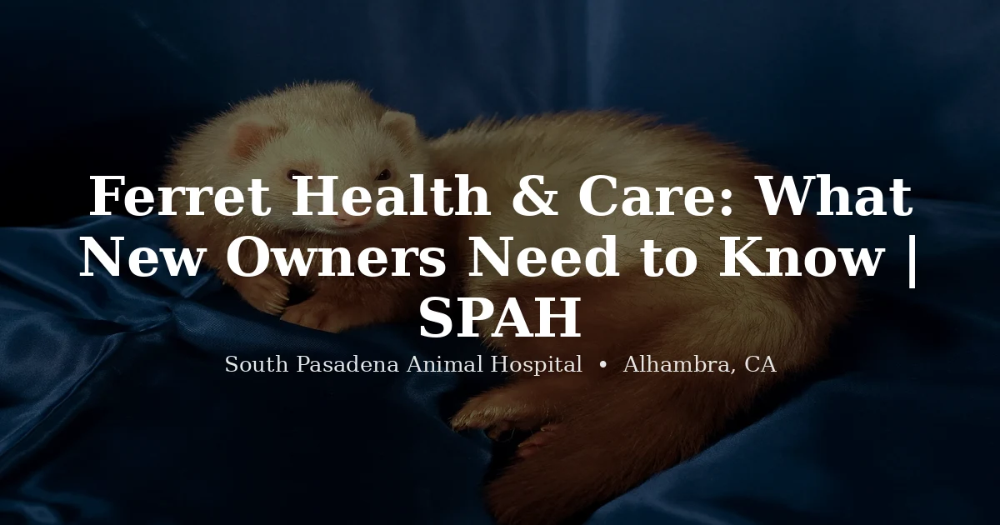

May 5, 2026 · 8 min read
Ferret Health & Care: What New Owners Need to Know

Ferrets are intelligent, social, endlessly entertaining animals — and they come with a health profile that every owner should understand before bringing one home. We see ferrets at our Alhambra clinic, and we want their owners to be informed. These animals are prone to several serious diseases, particularly as they age, and being prepared makes a real difference in outcomes.
Housing and Environment
Ferrets are active and need space. A multi-level wire cage (at least 3 feet wide x 2 feet deep x 2 feet tall) with a solid or covered wire floor (bare wire floors cause foot problems) provides a good minimum. Larger is always better. Ferrets sleep 14–18 hours a day but when awake, they are intensely active and curious.
Out-of-cage time is essential: ferrets need at least 2–4 hours of supervised free-roam time daily. Ferret-proofing a room is non-negotiable — they squeeze through extremely small gaps, open cabinets, and will chew and swallow anything soft (foam, rubber, erasers, silicone) within reach. Foreign body ingestion is one of the most common reasons ferrets end up in emergency veterinary care.
Temperature: ferrets are very heat-sensitive. Keep their environment below 80°F. Heat stroke can occur rapidly in ferrets exposed to temperatures above 85°F — a significant concern in Southern California summers. Never leave a ferret in a hot car or in direct outdoor sun.
Diet
Ferrets are obligate carnivores with a short, fast digestive tract designed for high-protein, high-fat animal protein. They cannot digest plant matter effectively and have a very limited ability to process carbohydrates.
The ideal ferret diet:
- High-quality ferret kibble: Look for named meat (chicken, turkey, duck) as the first 1–2 ingredients. Protein should be 30–40% minimum; fat 15–20%. Avoid grain-heavy formulas with corn syrup, peas, or fruits as prominent ingredients.
- Raw or whole prey diet: Raw chicken wings, turkey necks, mice, chicks, and other whole prey items are increasingly popular and nutritionally excellent for ferrets. This approach mimics their natural diet and many ferrets thrive on it. Transition should be gradual.
- Avoid: Fruit, vegetables, grains, high-carbohydrate treats, and foods with sugar. High carbohydrate intake is strongly associated with insulinoma development in ferrets.
Fresh water should always be available. Both water bottles and bowls work; many ferrets prefer bowls and drink more from them.
Vaccinations
Ferrets need two core vaccines:
- Distemper (canine distemper virus): Distemper is invariably fatal in ferrets. Vaccines are given as a series in kits (baby ferrets) and then annually. Use a ferret-approved distemper vaccine — not all canine distemper vaccines are safe for ferrets.
- Rabies: Required in many states (including California) and essential for protection. Given annually.
Vaccine reactions are more common in ferrets than in dogs and cats, so we typically monitor ferrets for 30 minutes after vaccination at our clinic.
Common and Serious Health Problems
Ferrets in the United States have a well-documented predisposition to several serious diseases, partly attributed to the fact that virtually all American pet ferrets come from large commercial breeding facilities where early spay/neuter and descenting are standard practice.
Adrenal Gland Disease
This is the most common serious disease in ferrets, affecting the majority of American ferrets over 3–4 years of age. The adrenal glands (which produce sex hormones, among others) become hyperplastic or develop benign or malignant tumors, producing excessive sex hormones.
Signs include:
- Symmetrical hair loss starting at the tail and moving forward
- Vulvar swelling in spayed females (a classic sign of adrenal disease)
- Prostate enlargement in males causing difficulty urinating (can be an emergency)
- Muscle wasting, lethargy, itching
- Return of sexual behaviors despite being neutered
Treatment options include surgical removal of the affected adrenal gland(s) and hormonal implants (Deslorelin/Suprelorin). The implants are a popular medical management option — they suppress sex hormone production for 1–2 years and need to be replaced.
Insulinoma
Insulinoma is a pancreatic tumor that causes the pancreas to overproduce insulin, leading to low blood sugar (hypoglycemia). It's also very common in middle-aged to older ferrets, often developing alongside adrenal disease.
Signs include:
- Episodes of weakness, "pawing at the mouth," drooling
- Staring into space, apparent confusion
- Collapse or seizures in severe cases
- Symptoms often improve briefly after eating (blood sugar returns to normal)
Treatment includes surgery (to remove visible tumor nodules) and/or medical management with prednisolone and diazoxide. Diet management — frequent small high-protein meals and eliminating carbohydrates — helps manage blood sugar. This is a chronic condition that requires ongoing veterinary involvement.
Lymphoma
The third common ferret cancer. Signs vary by type but often include weight loss, enlarged lymph nodes, lethargy, labored breathing (if the chest is involved), and GI symptoms. Treatment with chemotherapy protocols exists and can achieve remission, though outcomes vary.
Gastrointestinal Foreign Bodies
Ferrets are notorious for chewing and swallowing soft materials — rubber (from toys, phone cases, shoe soles), foam, erasers, latex, silicone, and similar items. Even small pieces can cause life-threatening intestinal obstruction. Signs: vomiting, abdominal pain, reduced appetite, and no stool. Emergency surgery is often required. Prevention: ferret-proof the play area aggressively and eliminate all soft rubber and foam items from reach.
Aleutian Disease (ADV)
Caused by a parvovirus, Aleutian disease can cause progressive deterioration involving weight loss, hind limb weakness, and organ failure. Spread through direct contact and contaminated environments. Testing is available via PCR. There is no treatment.
Heartworm Disease
Ferrets can contract heartworm disease from mosquito bites just like dogs and cats. Southern California has year-round mosquito activity. Heartworm prevention (using Revolution/selamectin, which covers both heartworm and common external parasites) is strongly recommended for all ferrets in the area. Annual heartworm testing is advised.
Preventive Care Schedule
Young ferrets (under 1 year): full series of distemper and rabies vaccines plus a baseline wellness exam. Adults: annual wellness exam, vaccines, and heartworm testing. Ferrets over 3 years: consider twice-yearly exams, as the major diseases listed above become increasingly common at this age. We check our pricing page for current exam costs.
Frequently Asked Questions
What do ferrets eat?
Ferrets are obligate carnivores needing high-protein, high-fat animal protein. Best options: quality ferret kibble with meat as the first ingredient, or a raw/whole prey diet. Never feed fruit, vegetables, grains, or sugary treats — high carbohydrate diets are linked to insulinoma.
Do ferrets need vaccinations?
Yes — distemper (fatal in ferrets) and rabies, both annually. Use ferret-specific distemper vaccine. Monitor for vaccine reactions for 30 minutes post-vaccination.
What are the most common health problems in ferrets?
Adrenal gland disease (very common over 3 years), insulinoma (hypoglycemia from pancreatic tumors), lymphoma, gastrointestinal foreign bodies, and heartworm disease in Southern California.
How long do ferrets live?
Most US pet ferrets live 5–8 years. American ferrets tend to develop age-related diseases earlier than European counterparts, largely due to early spay/neuter practices at commercial breeding facilities.
Can I find a ferret vet near Alhambra or South Pasadena?
Yes — we see ferrets at South Pasadena Animal Hospital in Alhambra. Call (626) 441-1314 or book online.